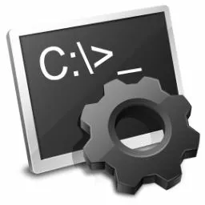

TASKKILL : arrêter de programmes
TASKKILL : arrêter de programmes

Cette commande vous permettra met fin à une ou plusieurs tâches ou à un ou plusieurs processus. Les processus peuvent être terminés par ID de processus ou par nom d’image. Taskkill vous permet de fermet les programmes ou les fenêtres bloqués ou qui ont du mal à s'arrêter.

Pour avoir plus d'informations ou alors que vous ne savez plus comment s'appelle la commande qui suit,vous pouvez écrire taskkill /?

taskkill /IM
Pour tuer un processus Windows à partir de son nom, vous pouvez utiliser le paramètre /IM
Ainsi, si vous désirez arrêter Mozilla Firefox, vous pouvez utiliser la commande :

taskkill /V
Le paramètre /V permet de tuer un processus à partir de son PID. Le PID est un identifiant unique qui permet donc d’identifier un processus, ce qui est d’ailleurs assez pratique, si vous avez plusieurs processus avec le même nom, comme cela peut être le cas avec un navigateur internet ou svchost.exe.L’onglet Détails du gestionnaire de tâches vous donne les PID de chaque processus Windows à travers la colonne PID. Vous pouvez le trouver à partir de la commande suivante.La commande est taskkill /V suivit du PID.
tasklist
La commande tasklist permet de lister les processus avec une colonne PID :
Voici une partie de l'affichage mais il y en a encore d'autres qui s'affichent.